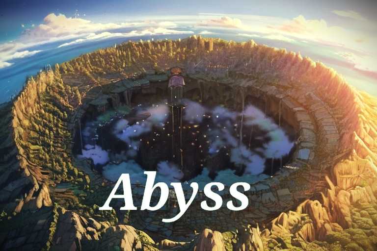
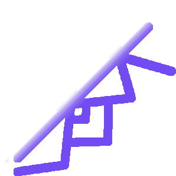

Abyss
Juego sencillo desarrollado originalmente solo con java, posteriormente fue transformado en un proyecto de javaFX para que tuviese interfaz gráfica.
Ver detalles
ÍxMusic
Una aplicación móvil de reproducción de música con streaming rápido desde Firebase y guardado de canciones.
Ver detallesZixionLauncher
Un launcher de videojuegos de escritorio ligero y rápido para organizar toda tu biblioteca sin distracciones.
Ver detalles